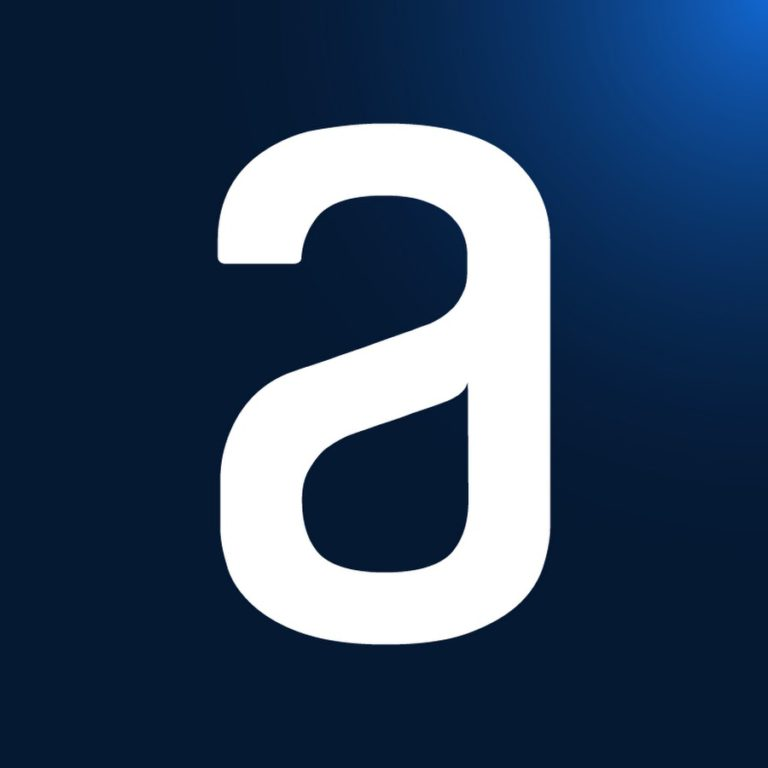

Desenvolvedor Front-end
Seja bem vindo! Me chamo Michel Douglas, desenvolvedor front-end com versatilidade na indústria de tecnologia. Capacidade de identificar, analisar e solucionar problemas. Estou sempre estudando cada vez mais para ser um profissional melhor. Com bastante experiência em front-end e cursando cursos para aprimorar mais o back-end.
Sobre mim
Possuo experi√™ncia como Front End utilizando Javascript, React, NextJs, TypeScript, Tailwind Css, Bootstrap, e Sass, metodologia Scrum e aplicando o fluxo de trabalho Git Flow, já como back-end me destaco em Python. Proficiente em tecnologias, tamb√©m tenho conhecimento em bancos de dados, sistemas de controle de versão, processos de implanta√ß√£o, cloud computing e pentester. Bacharelado em Engenharia de Softwareüéì, praticando e buscando novas oportunidades.
Skills
-
 HTML5
HTML5
-
 CSS3
CSS3
-
 Javascript
Javascript
-
 React
React
-
 Typescript
Typescript
-
 Sass
Sass
-
 BootStrap
BootStrap
-
 Tailwindcss
Tailwindcss
- Python
-
 Firebase
Firebase
-
 Git
Git
-
 NextJs
NextJs
- Cloud
-
 Pentest
Pentest
- SQL
Formação Acadêmica
-
Engenharia de Software
Unicesumar - Concluído
-

Desenvolvedor
Full StackAlura - Concluído
-
Inteligência Artificial
Aplicada à saúdeUSP - Concluído
-

Curso de idiomas
Inglês e EspanholKultive - Em andamento
Experiência
Sequoia Corretora
Desenvolvedor front-end
(Estágio) | Jan/2021 - Out/2022
Desenvolvedor Front end em soluções web, utilizando as tecnologias, JavaScript, HTML, CSS, Sass e Next.js, versionamento de códigos utilizando Git. Demonstrando capacidade de trabalhar em projetos de grande impacto e alcance. Trabalho seguindo a metodologia Scrum e aplicando o fluxo de trabalho Git Flow para garantir organização e eficiência no versionamento de código.
- NextJs
- Sass
- Html
- Css
- Javascript
- Git Flow
- Mentodologia Scrum
Restaurante Barão
Desenvolvedor Front End - (Autônomo)
Jan/2023 - Jun/2023
Desenvolvimento de soluções tecnológicas com impacto social, utilizando React.js, Tailwind CSS e TypeScript. Trabalho seguindo a metodologia Scrum e aplicando o fluxo de trabalho Git Flow para garantir organização e eficiência no versionamento de código. Construção de interfaces modernas, acessíveis e responsivas, sempre buscando a melhoria contínua e a entrega de valor para a comunidade.
- React.js
- Typescript
- Tailwind CSS
- Git Flow
- Mentodologia Scrum
Projetos
Serenatto
- HTML5
- CSS3
- Javascript
- Bootstrap
O Serenatto é uma landing page fictícia sem fins comerciais. Para quem busca aquela página para seu site estilosa, Serenatto tem tudo a ver. O site oferece uma experiência de usuário suave com design responsivo e uma UI moderna. Exibe várias seções, como serviços, informações de contato e muito mais, todas preenchidas dinamicamente. Ele inclui recursos como uma página inicial, com tratamento de erros adicional e estados de carregamento para garantir uma navegação perfeita.
Lista de Compra
- HTML5
- CSS3
- Javascript
A aplicação permite inserir itens em uma lista de forma dinâmica, permitindo a exclusão e edição dos mesmos. Os itens terão o nome e também a data e horário que foram criados. Também é possível selecionar um checkbox para informar que o item foi comprado.
Bitebank
- HTML5
- CSS5
- Javascript
- Typescript
Temos um projeto com uma apresentação de uma landing page de um banco, realizando simulações de depósito, transferências e pagamento de boleto. Saldo é atualizado conforme as transações. Disponível para versões mobile, tablet e desktop. Este projeto conta com classe conta e armazenador, atributos e construtor de conta, modificadores de acesso, métodos estáticos, herança de classes e decorators de validação.
Fokus
- HTML5
- CSS3
- Tailwind CSS
- Javascript
Uma landing page responsiva, com a ideia de sessões de relaxamento com tempo e música interativa. Visando aperfeiçoar as habilidades em tailwindcss.
Meteora
- HTML5
- CSS3
- Javascript
- Typescript
- Bootstrap
Meteora é uma plataforma de e-commerce para compra de roupas, desenvolvida com Bootstrap, TypeScript e Vite. Confira todas as roupas disponíveis para compra, adicione e remova roupas do seu carrinho.
Culturama
- HTML5
- CSS
O Culturama é uma landing page utilizado para divulgação de eventos culturais. A ideia principal desse projeto é evoluir ainda mais os conhecimentos em HTML e CSS, com foco em Flexbox e Grid. O código organizado e a otimização de imagens contribuem para um desempenho eficiente. Este projeto demonstra minha habilidade em criar websites interativos e visualmente atraentes.
Jogo do número secreto
- HTML5
- CSS
- Javascript
A landing page número secreto tem como objetivo trazer interatividade com o usuário. Destaco a usabilidade aprimorada com manipulação eficiente do DOM e a modernização visual. Desenvolvido com HTML, CSS e JavaScript, o projeto oferece uma experiência fluida e envolvente para os usuários.
Padock
- HTML5
- CSS
- Bootstrap
- Javascript
O Padock é uma aplicação web interativa que simula um cardápio online de uma padaria, permitindo aos clientes visualizar os itens disponíveis, Visando aperfeiçoar as habilidades em bootstrap.
Barbershop
- HTML5
- CSS
- SASS
Barbershop é uma landing page criada para uma barbearia. Um projeto independente que tem como objetivo principal a utilização do SASS, é um pré-processador de CSS que permite escrever estilos usando uma sintaxe mais fácil e intuitiva, além de adicionar recursos que não estão presentes no CSS puro.
Contato
Me mande uma mensagem!
Tem uma pergunta ou proposta, ou apenas quer dizer "olá"? Vá em frente.